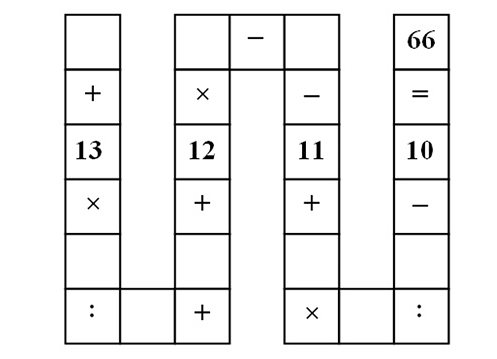

(Hint: The optimal Lagrangian multipliers are integral.)

One unit of commodity A must be shipped from a to k and one unit of commodity B must be shipped from h to f. The flows must be integral. The cost of shipping one unit of flow along an arc is one for each commodity, and the total capacity of each arc is also one. The capacity is the sum of the flow in both directions. A Lagrangian relaxation for the integer multicommodity flow problem could be constructed by placing the upper bound constraints on the arcs in the objective function. If the Lagrangian multipliers are set equal to zero, what is the value of the Lagrangian relaxation? Find a choice of Lagrangian multipliers for which the optimal solution to the Lagrangian relaxation gives the optimal solution to the multicommodity flow problem. How does the optimal value of the Lagrangian relaxation compare to the optimal value of the LP relaxation?

Solve this problem using Bender’s decomposition. (Take the problem
as the initial relaxation (RMP).)
We define a binary variable
Let denote the set of all valid clusters. We can then define the clustering problem as
In the LP relaxation, the binary restriction on x is replaced by the requirement that x ≥ 0. The dual to the LP relaxation is
In a column generation approach, we work with a subset of . Solving the LP relaxation and its dual for this subset gives a vector of dual multipliers. We have then solved the LP relaxation for the full set if is feasible in the full dual problem.
Construct a quadratic binary program to determine whether is feasible for the full set . Reformulate the quadratic binary program as an equivalent integer linear program.

it is desired to place each of the numbers 1,…,9 into exactly one of the nine empty positions so that the equation is correct. Note that the colon symbol is used to denote division, and the standard arithmetic rules apply so division and multiplication are performed before addition and subtraction.
- Formulate the problem as a mixed integer nonlinear feasibility program.
- Use the McCormick inequalities to express it as an equivalent mixed integer linear feasibility program, and hence solve it.